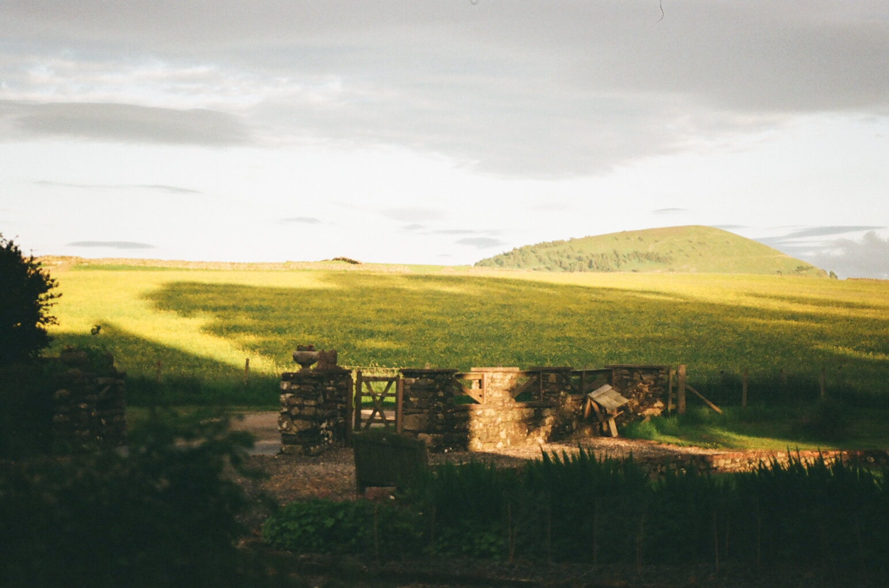

Contact Sheet — Roll 01

Photographer & Cinematographer
I shoot on film because the wait makes me look harder before I press the shutter.
Contact Sheet — Roll 01
Reel 2026
About
I've spent the last decade shooting on whatever film stock survives a cargo hold, moving between editorial portraits and short documentary work. I like subjects who forget the camera is there. Most of what's on this site was shot on three bodies and a handful of primes — no zooms, no drones, no shortcuts.
Based in Bristol, UK. Available for editorial, brand, and documentary commissions worldwide.